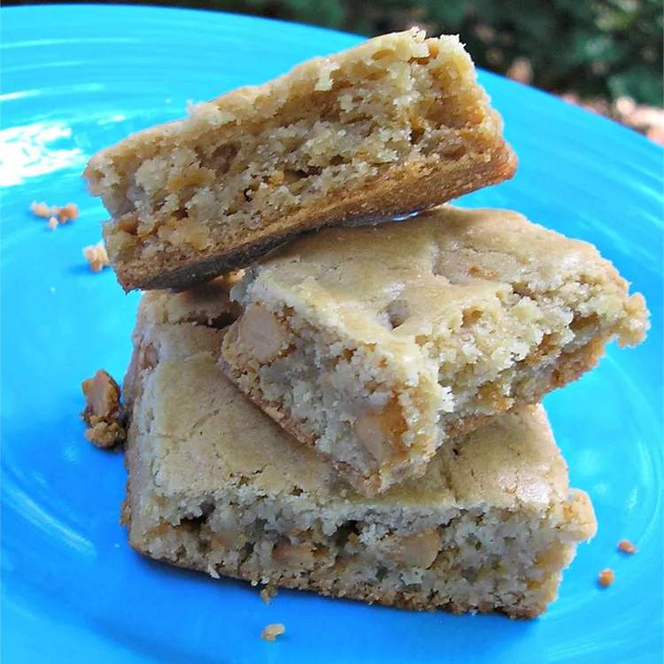

Brown Sugar Brownies

Description:
For Chocolate Brown Sugar Brownies, stir 1 cup semisweet chocolate chips into the batter along with the nuts. Bake in lightly greased pan 13 x 9 x 2 inches for 30 minutes.
Servings: 20; Yield: 20
Ingredients:
- 1 ⅓ cups sifted all-purpose flour
- 1 teaspoon baking powder
- ½ teaspoon salt
- 1 cup packed brown sugar
- ½ cup butter, softened
- 1 egg
- 1 teaspoon vanilla extract
- ½ cup chopped walnuts
Steps:
- Pre-heat oven to 350 degrees F (175 degrees C). Lightly grease a 9 x 9 x 1-3/4 inch pan.
- Sift together flour, baking powder and salt and set aside. In large bowl, beat together butter, sugar, egg and vanilla until smooth.
- Stir in the flour mixture and the nuts until well blended. Spread evenly in prepared pan. Bake 25-30 minutes or until surface springs back when gently pressed. Cool slightly. While still warm, cut into bars with a sharp knife.